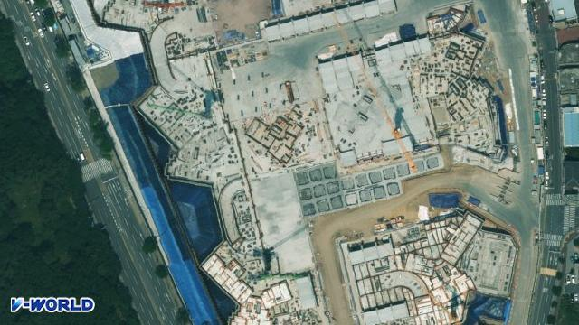

울산 남구 · 신정동
청광국민 실거래가
1982년 준공 · 매매 75건 · 국토교통부 실거래가를 매일 새로 받아 정리합니다.

단지 정보
- 위치
- 울산 남구 신정동
- 준공
- 1982년
세대수 · 주차는 K-apt 에 자료가 없는 단지입니다(관리비 공개 대상이 아닌 작은 단지 등).
평형별 한눈에
| 평형 | 매매 | 가장 최근 | 최근 1년 평균 | 역대 최고 |
|---|---|---|---|---|
| 17평 43㎡ | 75건 | 6억 1,500만원 2024.02.03 · 3층 | 4억 9,425만원 2건 | 6억 3,750만원 2021.05.08 |
평은 공급면적 기준입니다 · 해제된 거래 제외 · 「최근 1년」은 가장 최근 거래에서 거꾸로 1년입니다. 층·동·수리 상태에 따라 값이 다릅니다.
최근 12개월 매매 신고 건수로 울산 · 남구 단지끼리 견준 순위입니다(해제 제외 · 날마다 새로).
매매 실거래 전체 75건 · 그래프와 표는 최근 75건
| 계약일 | 평형 | 층 | 거래 금액 |
|---|---|---|---|
| 2024.02.03 | 17평 43.59㎡ | 3층 | 6억 1,500만원 |
| 2023.06.15 | 17평 43.59㎡ | 1층 | 3억 7,350만원 |
| 2021.05.21 | 17평 43.59㎡ | 3층 | 1억 6,986만원 |
| 2021.05.08 | 17평 43.59㎡ | 3층 | 6억 3,750만원 |
| 2020.12.05 | 17평 43.59㎡ | 4층 | 5억 3,550만원 |
| 2020.08.30 | 17평 43.59㎡ | 5층 | 3억 8,150만원 |
| 2020.08.04 | 17평 43.59㎡ | 5층 | 4억 2,450만원 |
| 2020.07.05 | 17평 43.59㎡ | 1층 | 4억 5,300만원 |
| 2020.06.11 | 17평 43.59㎡ | 3층 | 4억 550만원 |
| 2020.06.05 | 17평 43.59㎡ | 4층 | 3억 9,800만원 |
| 2020.05.28 | 17평 43.59㎡ | 2층 | 2억 4,750만원 |
| 2020.05.16 | 17평 43.59㎡ | 3층 | 2억 5,200만원 |
| 2020.05.02 | 17평 43.59㎡ | 3층 | 2억 3,650만원 |
| 2020.02.03 | 17평 43.59㎡ | 5층 | 2억 5,150만원 |
| 2020.01.06 | 17평 43.59㎡ | 3층 | 2억 3,800만원 |
| 2019.12.16 | 17평 43.59㎡ | 5층 | 3억원 |
| 2019.11.06 | 17평 43.59㎡ | 4층 | 2억 300만원 |
| 2019.10.10 | 17평 43.59㎡ | 1층 | 1억 8,700만원 |
| 2019.10.05 | 17평 43.59㎡ | 3층 | 2억 1,250만원 |
| 2019.09.19 | 17평 43.59㎡ | 5층 | 1억 9,900만원 |
점 하나가 거래 한 건 · 점선은 분기 평균 · 해제된 거래 제외 · 국토교통부 아파트 매매 실거래가. 층·동·수리 상태에 따라 값이 다릅니다.
이 단지 집을 내놓기 전에
- 같은 평형 · 비슷한 층의 거래를 고르세요. 위에서 평형을 고르면 그 평형 거래만 보입니다. 실거래는 이미 체결된 값이고, 지금 나와 있는 매물 가격은 팔고 싶은 값이라 서로 다릅니다.
- 값 차이를 설명할 자료를 챙기세요. 동 · 층 · 방향, 수리한 곳과 시기, 내부 사진이 있으면 상담이 빨라집니다.
- 언제 비워 줄 수 있는지 알려 주세요. 직접 살고 계신지 세를 주셨는지, 세를 주셨다면 보증금과 만기를 알려 주시면 됩니다.